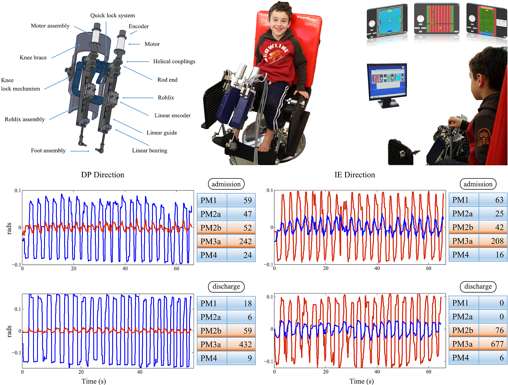
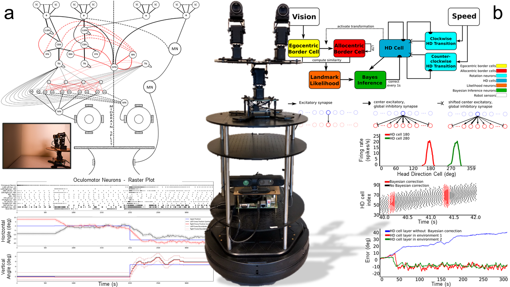
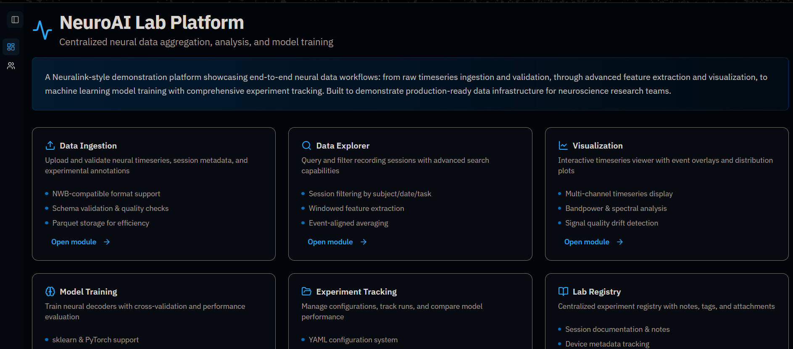

Neuron–Astrocyte Recurrent Reinforcement Learning
Recurrent RL models that test how slower astrocyte-like state dynamics can modulate memory, credit assignment, and adaptive behavior in temporally structured tasks.
Ph.D. researcher at Rutgers University studying learning, memory, and adaptive computation through associative, recurrent, and biologically inspired neural systems. I build research models spanning neuron–astrocyte networks, reinforcement learning, and spiking computation.
Current work on memory, adaptive computation, and biologically inspired learning systems.
Recurrent RL models that test how slower astrocyte-like state dynamics can modulate memory, credit assignment, and adaptive behavior in temporally structured tasks.
Investigates how associative systems can reconstruct novel structured memories from previously learned components while preserving the stability and identity of the underlying memories.

Spiking state maps for an InMotion Bionik arm, evaluated by completion time, path deviation, and assistance work.
Manuscripts, thesis, and interactive research evidence.
HHAN reached 83% mean primitive and composite recall on synthetic dials across η ∈ [0, 0.5], without storing composites as attractors.
Interactive companion: 100 MNIST digit-pair hypotheses; compare aligned, no-context, and shuffled-context retrieval.
Master's thesis: biologically inspired SNN control for real-time robotic face tracking.
View on ProQuest →Computational principles linking sensory-cortical perception with higher-level reasoning.
Production software engineering before doctoral research.
Built and modernized production systems supporting telecommunications-scale customer and billing infrastructure, spanning microservices, data processing, automation, CI/CD, databases, and production diagnostics.
Public code and demonstrations.

Python/ROS SNN controller tested on step, chirp, and circular gaze trajectories.

End-to-end neural-timeseries pipeline with reproducible local and Docker setup paths.
RL reimplementation combining key-value memory, contrastive predictive coding, and stop-gradient learning.
Training and research focus.
Ph.D. in Computer Science at Rutgers (4.0 GPA), advised by Prof. Konstantinos Michmizos.
Peer Reviewer: IEEE Engineering in Medicine and Biology Conference (EMBC)
Before beginning my Ph.D., I worked as a Software Developer at Amdocs, building production microservices, data-processing systems, developer automation, and reliability tooling for telecommunications-scale infrastructure.
NeuroAI, astrocyte-modulated networks, spiking dynamics, RL, neuromorphic computing, and neural decoding.
Academic recognition and teaching.
Taught permutations & combinations, probability, and graph theory to Rutgers undergraduates.
Top 15 students for 4 consecutive years in the B.E. Computer Science program.
Seeking a Summer 2027 research, AI/ML, or neurotechnology internship.
Location: New Brunswick, NJ
Availability: Summer 2027 (May–August)